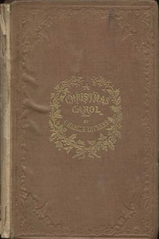
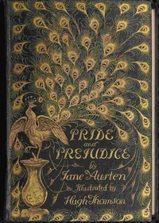
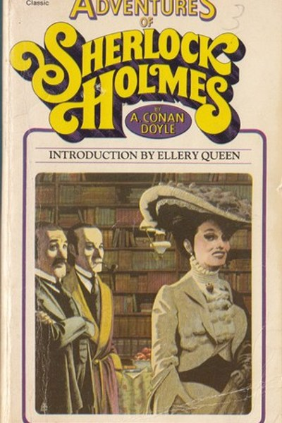

A Christmas Carol
Dickens's beloved ghost story of Scrooge, redemption and the spirit of Christmas.
Read MoreLiterature, at its broadest, is the art of using language to capture human experience with such precision and beauty that the work outlasts its moment of creation. The books in this category are not simply old — they are enduring because they speak to something permanent in what it means to be human: the longing for love and justice, the struggle with mortality, the collision of individual will with social expectation, and the quiet internal work of learning to see clearly. LifeWithBooks has curated a library of great literature drawn from multiple traditions and centuries. British Victorian novels sit alongside French Romantic epics; American Transcendentalist essays share space with Russian psychological masterworks; Gothic horror classics stand beside Edwardian adventure stories. What unites them is that each has survived the most demanding filter in existence: generations of readers who had no obligation to keep reading them, but chose to. Why does literature matter in a world of streaming entertainment and social media? Because nothing else trains the mind in quite the same way. Literary fiction builds what psychologists call theory of mind — the ability to model other people's inner worlds accurately. Studies consistently show that literary readers are better at understanding emotional nuance, tolerating ambiguity, and thinking through complex moral scenarios. These are not small skills. They are foundational to leadership, parenting, teaching, medicine, law, and every other field that requires genuine understanding of other people. The literature on LifeWithBooks is also an extraordinary English-language resource. These texts were written by masters of the language at the height of their powers — Dickens's comic timing, Austen's irony, Brontë's intensity, Wilde's wit. Reading them trains your own language instincts without you noticing. Vocabulary, syntax, and rhythm embed themselves through pleasure rather than effort. Every title in this category is freely available as a PDF download because the works are in the public domain. This means you can legally read, share, and even print them without cost. LifeWithBooks has formatted each PDF for comfortable digital reading, so you can carry the entire Western literary canon on your phone without spending a rupee.
Approaching a work of great literature for the first time can feel intimidating, especially if you are used to modern genre fiction or non-fiction. The prose style of the nineteenth century is slower, the sentences longer, the narrative pace more patient. Give yourself permission to adjust — most readers find that after thirty pages, they have acclimatised to the author's rhythm and the initial friction disappears. Context enriches every literary experience. Before starting a novel, spend ten minutes reading a brief introduction or author biography. Understanding that Frankenstein was written by a nineteen-year-old woman in a ghost-story competition between Byron and Shelley, or that Crime and Punishment emerged from Dostoevsky's experience in a Siberian prison camp, transforms the reading experience from an encounter with words on a page to a conversation across centuries. Pay special attention to the opening chapters. Great literature typically encodes its central themes and tensions in the first few pages. Austen's famous opening line about a single man in possession of a good fortune is not decoration — it immediately establishes the novel's central preoccupation with marriage as an economic transaction. Kafka's opening sentence, 'One morning Gregor Samsa woke to find himself transformed into a monstrous insect,' is the novel's entire argument compressed into one line. Read slowly at the start. After finishing, resist the urge to immediately move to the next book. Give the work a day to settle. Return to passages you underlined. If the book moved you, look up an essay or discussion online — literary criticism is itself a great reading tradition, and encountering others' interpretations often reveals depths you missed on a first pass.

Dickens's beloved ghost story of Scrooge, redemption and the spirit of Christmas.
Read More
Mary Shelley's groundbreaking science-fiction novel about creation, responsibility and what it means
Read MoreThe coming-of-age story of the orphan Pip, his mysterious fortune and the lessons of ambition.
Read More
Swift's satirical voyages to lands of tiny people, giants and talking horses.
Read More
Victor Hugo's sweeping epic of justice, mercy and redemption in nineteenth-century France.
Read More

Jane Austen's beloved novel of manners, marriage and misunderstanding between Elizabeth Bennet and M
Read More

Twelve classic detective stories featuring Sherlock Holmes and Dr Watson, from Arthur Conan Doyle.
Read More
Dumas's sweeping epic of wrongful imprisonment, hidden treasure and elaborate revenge.
Read More
Dumas's swashbuckling epic of d'Artagnan, Athos, Porthos and Aramis in seventeenth-century France.
Read More
Robert Louis Stevenson's timeless pirate adventure with Jim Hawkins, Long John Silver and a hunt for
Read More